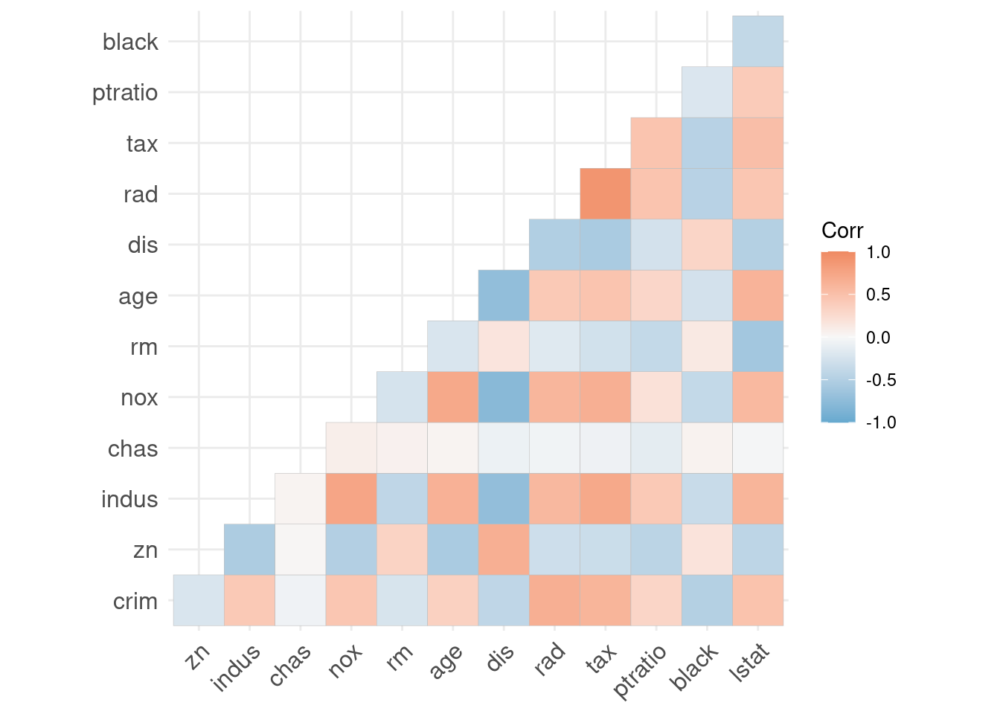
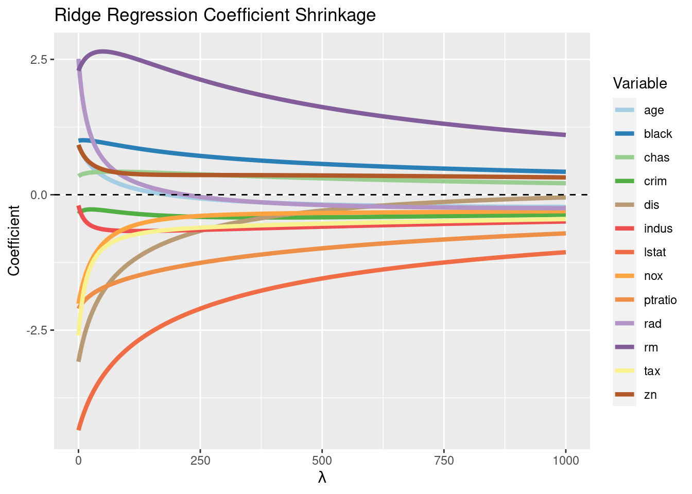
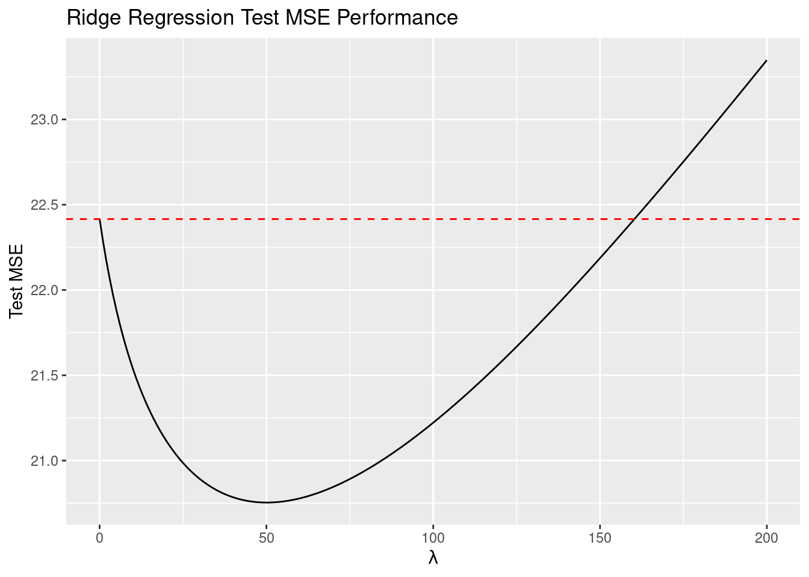

Case 2: Correlated Independent Variables
Perfect collinearity or multicollinearity like in the last case is rarely found in real data. What’s much more common is having variables that are strongly correlated with one another, but not perfectly. When this is the case, OLS can
- fail to find a solution due to numerical rounding (if variables are almost perfectly related) or
- find an unstable solution that can vary wildly between similar data and make it difficult to discern which variables contribute most to prediction of the outcome (usually by imprecisely estimating coefficients).
In the same way as in the previous case, ridge regression can alleviate both of these problems, but to a different degree.
We won’t perform cross validation to determine the optimal penalty parameter but will instead evaluate models over ranges of penalty values to show how ridge regression behaves over the range and compare to OLS.
Data
For this case, we’ll use the famous Boston housing data set. The data come pre-loaded in the MASS package, so there’s no need to download and read in data. The data set contains variables relating to home values in various towns and suburbs in Boston, such as crim (crime rate), nox (an air pollution measure), and rm (average number of rooms per home). We’ll build a model to predict medv, the median value of a home in a town. Some of the variable names are not incredibly self-explanatory, so feel free to check the documentation for more details.
This case uses many of the same packages and functions that were loaded and written in the first case, so review that case if not already completed.
We’ll use model.matrix to create our input matrix without the vector for the intercept and separate medv into its own vector.
Then we can split our data into training sets and testing sets. We’ll use sample to randomly pick 60% of the rows in the data to use as our training set while the other 40% will go into our testing set. Then we’ll apply our standardize function we wrote to the input data for each set.
Exploratory Analysis
We can easily visualize the correlations between the independent variables using the main function of the ggcorrplot package. First we create a correlation matrix of the independent variables using cor,11 R’s built-in correlation function, and feed it into ggcorrplot for a quick and simple correlation heat map.
X_corr <- cor(X_train)
ggcorrplot(X_corr, type = "lower",
colors = rev(brewer.pal(3, name = "RdBu")))
Several variables are highly correlated with one another. indus (a measure of town industrial concentration), nox (air pollution), and age (average home age) are all highly negatively correlated with dis (distance to employment centers). It’s probably not a surprise that some towns in more industrial areas would have more exposure to air pollution and that development might be more common (and so home ages would be lower) in high-employment suburbs far away from job centers. But how much, together, are these variables contributing to prediction? In other words, do we need all of these variables that are highly related to one another or will one or two be enough to capture the “action” contained in all of them?
To explore this further, we can quickly perform a principal component analysis12 of our input matrix. prcomp is R’s built-in PCA function. We’ll look only at the first five principal components.
## PC1 PC2 PC3 PC4 PC5
## crim 0.24723382 -0.2511045 0.32667740 -0.05176398 0.0115208738
## zn -0.25663683 -0.2949816 0.34809979 0.18933832 -0.2393946151
## indus 0.34672495 0.1184171 -0.05263250 -0.02367901 -0.0564490554
## chas -0.01199561 0.5009851 0.25771830 -0.44547852 -0.6803669783
## nox 0.34539496 0.2109929 0.04747682 0.21510231 0.0005181504
## rm -0.17494602 0.2982463 0.52407021 -0.11258859 0.5417159930
## age 0.31669117 0.3050543 -0.10973424 0.16707139 0.0979389787
## dis -0.32017540 -0.3591163 0.04200562 -0.05483417 -0.2306089451
## rad 0.32352458 -0.2095725 0.30789728 -0.21403644 0.0560045383
## tax 0.33749996 -0.2005586 0.25100970 -0.14875406 -0.0015581921
## ptratio 0.20651028 -0.3128254 -0.25092106 -0.64907762 0.1514701909
## black -0.20783511 0.1352615 -0.39138198 -0.32773507 0.1171877432
## lstat 0.30907152 -0.1706826 -0.19560668 0.27557840 -0.2835976550The rotation matrix from prcomp contains the loadings, which are the correlations between the input variables and the directions represented by the principal components when the input variables are standardized.13 To find how much each variable “contributes” to the direction of each principal component we simply take the column-wise absolute values as a percentage of the totals. We’ll do this using a combination of sweep to divide within columns and colSums to get column totals.
boston_pcomps <- as.data.frame(abs(boston_pcomps))
boston_pcomps <- sweep(abs(boston_pcomps), 2, colSums(abs(boston_pcomps)), "/") * 100## PC1 PC2 PC3 PC4 PC5
## crim 7.2625258 7.456042 10.520227 1.8004627 0.46674735
## zn 7.5387405 8.758884 11.210107 6.5855940 9.69863956
## indus 10.1850907 3.516158 1.694962 0.8236069 2.28693132
## chas 0.3523725 14.875744 8.299487 15.4947008 27.56383676
## nox 10.1460221 6.265009 1.528930 7.4817209 0.02099192
## rm 5.1390620 8.855824 16.877009 3.9160733 21.94664303
## age 9.3028444 9.057973 3.533850 5.8111022 3.96782047
## dis 9.4051942 10.663235 1.352737 1.9072503 9.34270404
## rad 9.5035767 6.222833 9.915437 7.4446478 2.26892251
## tax 9.9141054 5.955185 8.083445 5.1739861 0.06312733
## ptratio 6.0662663 9.288720 8.080591 22.5763152 6.13654065
## black 6.1051834 4.016318 12.603955 11.3993306 4.74764932
## lstat 9.0790161 5.068075 6.299262 9.5852092 11.48944572Scanning across the principal components (columns) it’s relatively easy to see which variables contribute the most to the first five principal components. This is analogous to the discussion in the theory section about variables being associated with singular values: we should expect that the variables that contribute the most to the these first few principal components will be among the slowest to shrink to zero as \(\lambda\) increases.
Implementation
We’ll solve for our ridge regression estimates over a wide range of the penalty term, \(\lambda\), to explore how ridge regression shrinks our variables - paying special attention to our three correlated variables - and how \(\lambda\) plays a role in the bias-variance tradeoff. For this example we’ll evaluate our models based on minimizing mean square error.
We’ll create two outcome data sets, betas and performance, that show us how our estimated coefficients and how our mean square error behave across the range of \(\lambda\)s.
betas <- NULL
performance <- NULL
for (lambda in seq(0, 1000, 1)) {
b_vec <- ridge(y_train, X_train, lambda)
b_MSE <- mean((X_test %*% b_vec + mean(y_test) - y_test)^2)
betas <- bind_rows(betas, tibble("lambda" = lambda,
"Variable" = colnames(X_train),
"Coefficient" = b_vec))
performance <- bind_rows(performance, tibble("lambda" = lambda,
"Test_MSE" = b_MSE))
}Let’s visualize how the coefficients of our variables change as \(\lambda \rightarrow \infty\).
palette <- colorRampPalette(brewer.pal(12, "Paired"))(length(colnames(X_train)))
coef_plot <- ggplot(betas, aes(x = lambda, y = Coefficient, color = Variable)) +
geom_line(size = 1.5) +
scale_color_manual(values = palette) +
geom_hline(yintercept = 0,
linetype = "dashed") +
labs(title = "Ridge Regression Coefficient Shrinkage",
x = TeX("$\\lambda$"))
As expected, the estimates for the variables with higher overall principal component contributions maintain their magnitude the most as \(\lambda \rightarrow \infty\) while estimates for the variables that don’t contribute much to the principal components (and therefore don’t contribute much to the variance of the projected data) shrink more quickly toward zero.
Next, we’ll visualize the test set MSE for \(\lambda \rightarrow \infty\). Can ridge regression outperform OLS?
performance_plot <- ggplot(performance %>% filter(lambda <= 200),
aes(x = lambda, y = Test_MSE)) +
geom_line() +
geom_hline(yintercept = performance$Test_MSE[performance$lambda == 0],
linetype="dashed",
color = "red") +
labs(title = "Ridge Regression Test MSE Performance",
x = TeX("$\\lambda$"),
y = "Test MSE")
The dashed red line represents the test MSE for OLS (i.e., where \(\lambda = 0\)). With some penalty, ridge performs better in prediction than OLS in this case with this train/test split.
Shrinking some of our coefficients close to zero (i.e., using a penalty, like \(\lambda\) in ridge regression) can minimize the variance of our fitted/predicted values, which can sometimes translate to better predictions. While estimating model variance via bootstrapping is outside the scope of this example, generally OLS - which minimizes bias but at the expense of allowing more than the minimum variance - doesn’t reach as low a MSE as a regularized regression like ridge regression - which can find a balance between bias and variance that minimizes MSE. However, this can change depending on the particular data in the train/test split.
corcalculates Pearson’s correlation by default.↩︎If you’re unfamiliar with PCA, see this excellent intuitive explanation.↩︎
If this is unfamiliar, for now just think of this as a measure of how much a direction of a principal component is associated with the existing directions of the variables in the hyperplanar space occupied by the data.↩︎